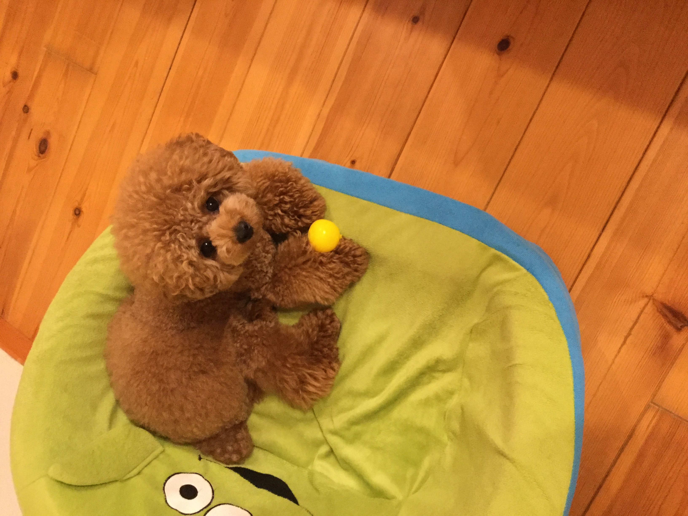

角谷の学習進捗ページ


ここでテキストを書いたとする。ここでテキストを書いたとする。ここでテキストを書いたとする。ここでテキストを書いたとする。ここでテキストを書いたとする。ここでテキストを書いたとする。ここでテキストを書いたとする。ここでテキストを書いたとする。ここでテキストを書いたとする。
ここでテキストを書いたとする。ここでテキストを書いたとする。ここでテキストを書いたとする。
ここでテキストを書いたとする。ここでテキストを書いたとする。ここでテキストを書いたとする。
上は弟的存在のサニー君
この半年で学んだ事
色々なソフトの基本的な使い方 デザインを際立たせるには方法が色々あるという事、綺麗で整えられた物だけがいいデザインではない事。